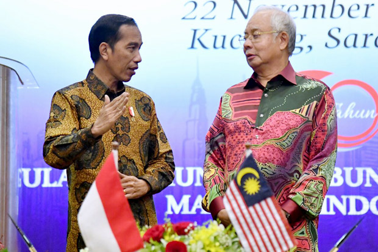
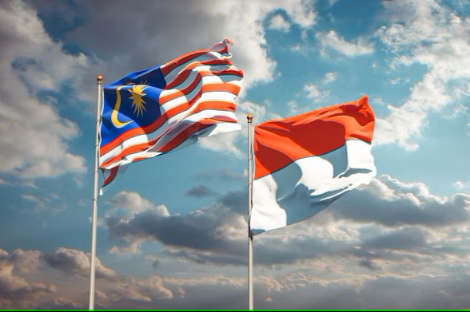
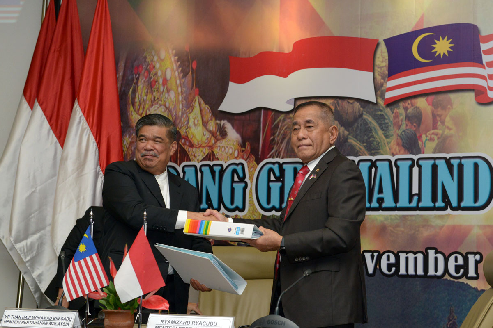
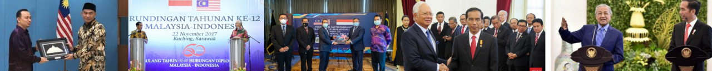

.png)
Indonesia dan Malaysia telah menjalin kerja sama bilateral selama bertahun-tahun melalui berbagai bentuk kolaborasi hingga saat ini. Hal ini telah membangun hubungan baik di antara mereka. Bentuk kerja sama antara kedua negara meliputi bidang ekonomi, pendidikan, sosial, serta kolaborasi dalam upaya melawan terorisme. Berbagai bentuk kerja sama ini mencerminkan komitmen bersama antara Indonesia dan Malaysia untuk memperkuat hubungan bilateral. Melalui kolaborasi-kolaborasi tersebut, kedua negara berupaya menjaga stabilitas, meningkatkan kesejahteraan, dan memastikan keamanan yang lebih baik bagi masyarakat masing-masing.
  Dalam kunjungan Menteri Pendidikan Malaysia, Maszlee bin Malik, ke kantor Kementerian Pendidikan dan Kebudayaan (Kemendikbud) di Jakarta, kedua negara membahas berbagai bentuk kerja sama, termasuk partisipasi siswa Indonesia dalam ajang kebudayaan di Malaysia, program pertukaran pelajar, serta keberadaan sekolah Indonesia di Malaysia. Kedua menteri menekankan pentingnya pendidikan dalam membangun peradaban, mengapresiasi kerja sama bilateral, dan berharap bahwa kerja sama ini akan membawa manfaat bagi masa depan dan kebudayaan kedua negara.
Indonesia dan Malaysia memiliki hubungan diplomatik yang erat dan banyak bekerjasama dalam bidang keamanan. Beberapa contoh kerja sama ini antara lain pemberantasan gerombolan komunis di Kalimantan dan Sarawak selama masa Orde Baru, latihan militer bersama melalui Defence Cooperation Program (DPC), dan pelaksanaan General Border Committee (GBC) yang berfokus pada pertahanan militer serta pemberantasan narkoba di perbatasan. Kedua negara juga bekerja sama dalam upaya pencegahan terorisme serta penanggulangan perdagangan manusia demi menjaga stabilitas dan keamanan.
Indonesia dan Malaysia, sebagai negara penghasil kelapa sawit, menjalin kerja sama bilateral untuk meningkatkan daya saing sektor kelapa sawit. Kerja sama ini fokus pada peningkatan kualitas produk dan pengiriman tepat waktu ke pasar internasional. Proses meliputi penyortiran dan pemurnian minyak sawit untuk memastikan kualitas produk yang bertujuan memperkuat daya saing kelapa sawit di pasar global.
Indonesia dan Malaysia menandatangani kerja sama di bidang bea cukai yang dilakukan oleh Menteri Keuangan Indonesia, Sri Mulyani, dan Menteri Keuangan Malaysia, Zafrul Aziz, serta disaksikan oleh Presiden Joko Widodo dan Perdana Menteri Malaysia, Ismail Sabri, pada 10 November di Istana Bogor. Kerja sama ini bertujuan untuk memperkuat administrasi kepabeanan, penegakan hukum, dan memberikan manfaat bagi eksportir dan importir kedua negara. Fokus dari kerja sama ini meliputi penanganan masalah perdagangan, penggunaan standar internasional, peningkatan sumber daya manusia, fasilitasi perdagangan berbasis teknologi, serta penerapan pertukaran informasi kepabeanan melalui kerangka kerja WCO SAFE.